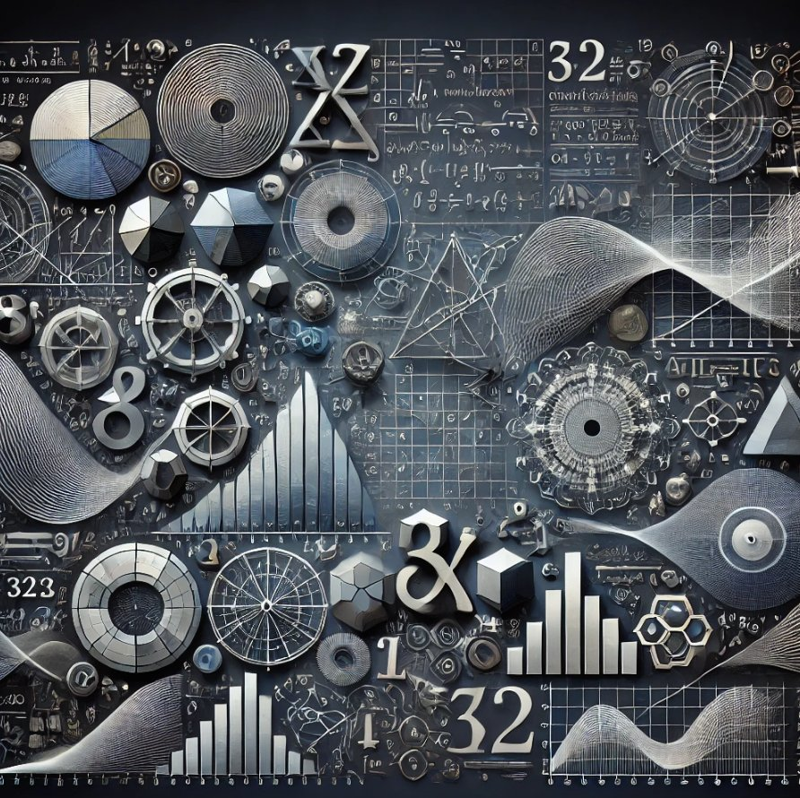
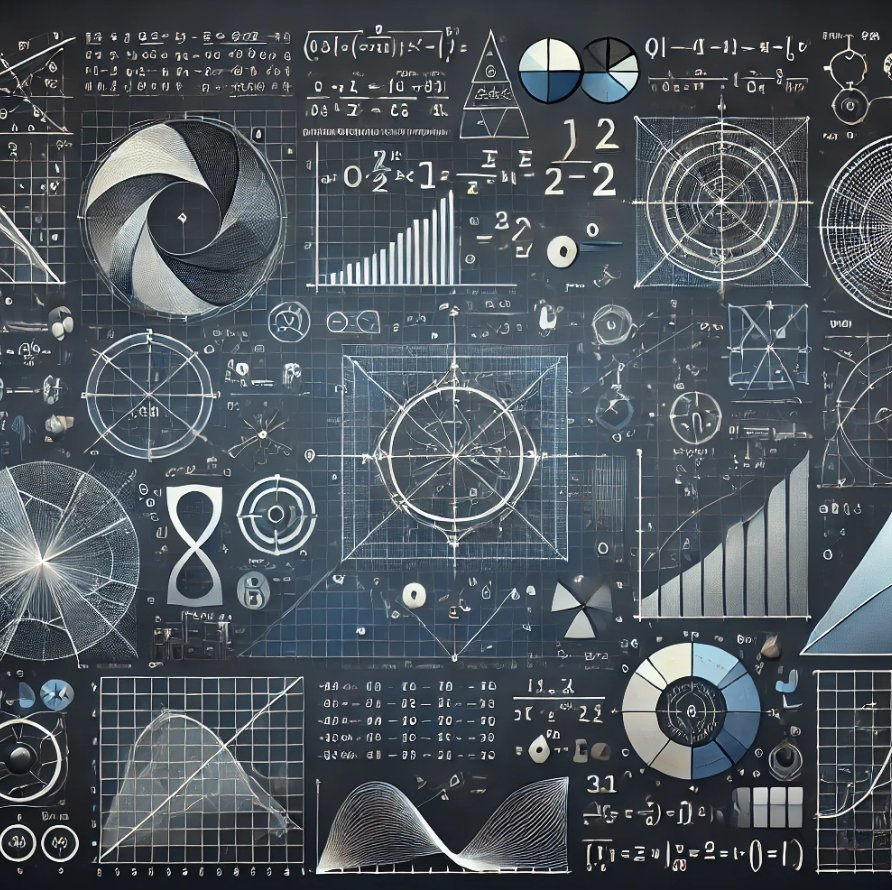

Цифрите и математиката


Числата играят основна роля в науката, философията и изкуството. Те ни помагат да измерваме, анализираме и
разбираме света около нас. Едно от най-интересните математически съотношения е златното сечение,
което се изразява чрез числото 1.6180339887 и е свързано с хармонията и пропорциите в природата, изкуството и
архитектурата.
Това съотношение може да бъде намерено в структурата на цветята, човешкото тяло и дори в галактиките.
Последователността на Фибоначи, която се изгражда по правилото, че всяко число е сумата от предходните две, също има връзка със златното сечение.
При нарастване на числата в редицата, съотношението между съседни числа се приближава до него. Тази редица започва с 0, 1, 1, 2, 3, 5, 8, 13, 21... и се среща навсякъде в природата – в разположението на листата по стеблото, спиралите на мидите и формата на ураганите.
От древността до днес хората използват числата не само за изчисления, но и за символични значения, вдъхновение и открития. Те формират основата на математиката и се използват в различни науки, инженерство, изкуство и дори в музиката.
Това съотношение може да бъде намерено в структурата на цветята, човешкото тяло и дори в галактиките.
Последователността на Фибоначи, която се изгражда по правилото, че всяко число е сумата от предходните две, също има връзка със златното сечение.
При нарастване на числата в редицата, съотношението между съседни числа се приближава до него. Тази редица започва с 0, 1, 1, 2, 3, 5, 8, 13, 21... и се среща навсякъде в природата – в разположението на листата по стеблото, спиралите на мидите и формата на ураганите.
От древността до днес хората използват числата не само за изчисления, но и за символични значения, вдъхновение и открития. Те формират основата на математиката и се използват в различни науки, инженерство, изкуство и дори в музиката.